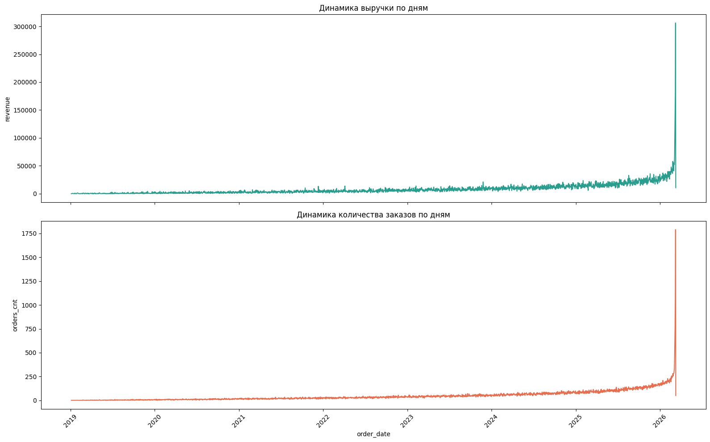
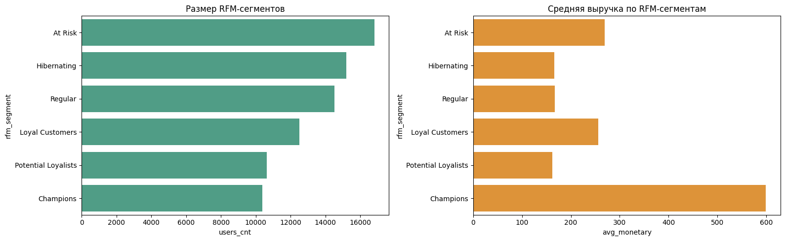
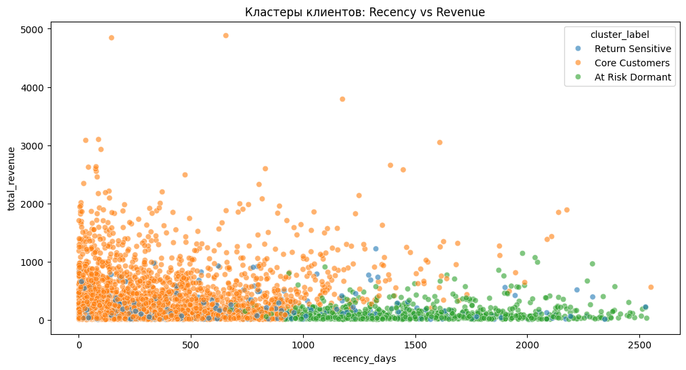
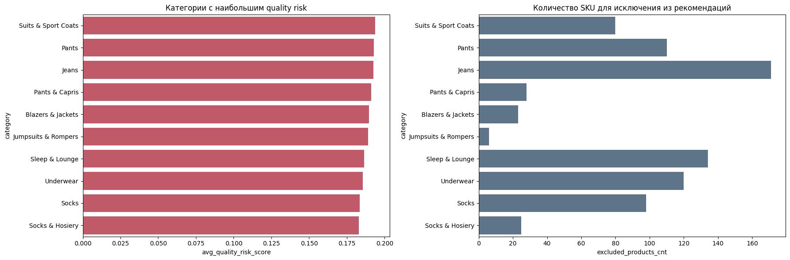

Обработка данных и EDA
- Первичный анализ транзакций, клиентов, товаров, событий
- Очистка пропусков, дублей, mixed datetime, приведение типов
- EDA по продажам, возвратам, логистике, каналам и географии
Витрина решения для кейса: данные, сегментация клиентов, прогнозирование оттока, оценка качества товаров, базовый прогноз продаж и логика рекомендательного контура.
CatBoost на time-based snapshots
Core, VIP, Dormant, Return Sensitive
Проблемные категории исключаются из рекомендаций
Daily/weekly прогноз для закупочного планирования
Динамика выручки, top-категории и top-SKU, география продаж, сезонность, базовый forecast продаж.
RFM-сегменты, клиентские кластеры, демография, поведенческие паттерны, база для retention и personalization.
Доля high-risk клиентов, churn score, ключевые триггеры ухода, карта рисков по сегментам и категориям.
Персональные предложения, исключение проблемных товаров и retention-логика для клиентов с высоким риском оттока.
От января 2019 до марта 2026 по месячной выручке
Средняя маржинальность line-level транзакций
Средний полный срок доставки по заказам
Выраженной недельной сезонности нет, но вторник показывает максимум по выручке.

sales_daily_revenue.png в landing/assets/plots/
Для лендинга лучше показывать контрольные точки роста, чем полный bar chart с плотными подписями месяцев.
Champions и Loyal Customers формируют наиболее ценный слой базы, а At Risk и Hibernating являются основными целями retention.
Кластеры используются для персонализации стратегии удержания, тональности коммуникации и продуктовых предложений.
Search является главным драйвером выручки и заказов при сопоставимом среднем чеке.
В текущей витрине уже собраны RFM, transaction history, tenure и behavioral signals. Это позволяет расширить landing до cohort-аналитики, retention curves и LTV dashboard без изменения структуры решения.


customer_clusters.png в landing/assets/plots/
Time-based snapshots, historical window + future inactivity target
Рабочий churn MVP для ранжирования клиентского риска
Находит наиболее рискованных клиентов для retention-кампаний
Отток определяется сочетанием снижения активности, слабой лояльности, ухудшения логистического опыта и негативного клиентского фидбэка.
Модель используется как инструмент ранжирования риска, а не как жесткий binary classifier. Это позволяет таргетировать retention-кампании на наиболее уязвимых клиентов и не тратить бюджет на всю клиентскую базу сразу.
Даже с доминирующим сигналом loyalty модель остается многокомпонентной и учитывает категорию, регион и вовлеченность.
Top 10% risk segment: precision 0.995, immediate targeting for personalized offers.
Клиенты со снижением активности, которым важны мягкие коммуникации и безопасный ассортимент.
Стабильные клиенты, для которых важнее удержание качества сервиса, а не агрессивная реактивация.
Модель лучше использовать как инструмент ранжирования риска и приоритизации клиентских действий, а не как жесткий binary cutoff.
Для проблемных SKU рассчитывается quality risk score на основе возвратов, негативных отзывов и логистического опыта.
High Risk + достаточный объем заказов -> exclude_from_reco = 1
Это снижает вероятность повторного негативного опыта и делает recommendation-слой более безопасным для retention-сценариев.


Реализован baseline forecast продаж на основе временного ряда, лаговых и rolling-признаков. Модель улавливает общий уровень и инерцию спроса, но остается чувствительной к резким spikes в конце горизонта.
Подходит как MVP и supporting module
RFM, кластер, любимые категории и бренды, история покупок, churn risk.
Из выдачи исключаются SKU с высоким quality risk и плохим пользовательским опытом.
Клиентам с высоким churn score выдаются реактивационные предложения.
Блок CTR, conversion to purchase, retention uplift и revenue from recommendations будет подключен после финальной интеграции движка рекомендаций. В текущем решении landing уже поддерживает продуктовый контур: профиль клиента, product blacklist и retention-trigger logic.
Выручка и число заказов устойчиво растут к концу горизонта, при этом ABC/XYZ показывает доминирование сегмента AZ: товары значимы по выручке, но нестабильны по спросу.
RFM-сегментация показывает крупный слой клиентов с высокой давностью последней покупки. Это лучший target для реактивационных кампаний и персональных предложений.
Jeans, Pants, Suits & Sport Coats и смежные категории дают высокий quality risk и значимый объем исключаемых SKU. Их нужно фильтровать из recommendation-выдачи.
CatBoost с ROC-AUC 0.8109 позволяет выделить high-risk слой и направить retention-бюджет туда, где вероятность ухода максимальна и реактивация наиболее оправдана.
Дашборды показывают продажи, возвраты, сегменты и проблемные категории.
Churn model и forecast определяют риск ухода и будущую динамику спроса.
Recommendation-слой подбирает персональные и retention-oriented предложения.
Дашборды оценивают эффект рекомендаций, качество сервиса и динамику удержания.